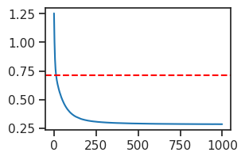
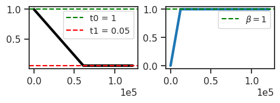
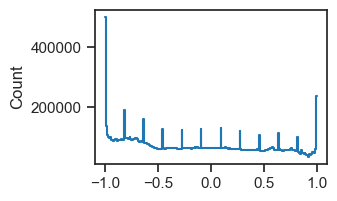
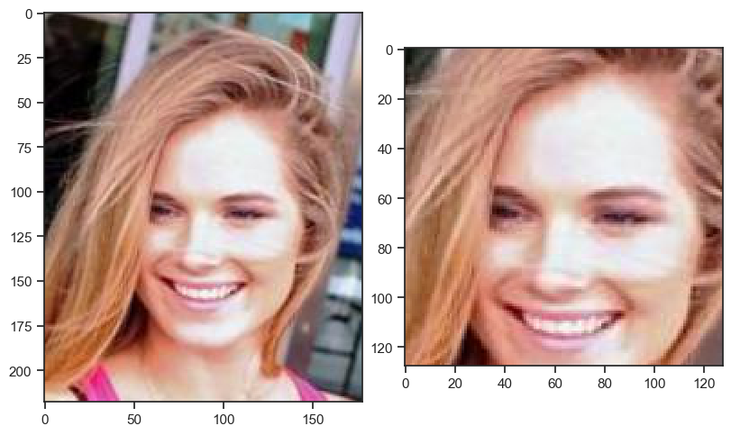

tmp — jul25#
Motivation: scratch notebook
# HIDE CODE
import os, sys
from IPython.display import display
# tmp & extras dir
git_dir = os.path.join(os.environ['HOME'], 'Dropbox/git')
extras_dir = os.path.join(git_dir, 'jb-progress-2025/_extras')
fig_base_dir = os.path.join(git_dir, 'jb-progress-2025/figs')
tmp_dir = os.path.join(git_dir, 'jb-progress-2025/tmp')
# GitHub
sys.path.insert(0, os.path.join(git_dir, '_MTMST'))
from vae.config_vae import groups_per_scale
groups_per_scale(
n_scales=3,
n_groups_per_scale=20,
is_adaptive=False,
)
[20, 20, 20]
groups_per_scale(
n_scales=3,
n_groups_per_scale=20,
is_adaptive=True,
)
[20, 10, 5]
groups_per_scale(
n_scales=2,
n_groups_per_scale=8,
is_adaptive=True,
)
[8, 4]
device_idx = 0
device = f'cuda:{device_idx}'
print(f"device: {device} ——— host: {os.uname().nodename}")
device: cuda:0 ——— host: chewie
results_dir = '/home/hadi/Dropbox/git/IterativeVAE/results'
df_ratedist = pd.read_pickle(pjoin(results_dir, 'df_ratedist.df'))
df_ratedist.shape
(139, 11)
df_pois_amort = df_ratedist.loc[df_ratedist['str_model'] == 'poisson+amort']
df_pois_amort = df_pois_amort.sort_values(by='distance')
df_pois_amort[:10]
| type | latent_act | str_model | seq_len | kl_beta | amort | %-zeros | r2 | r2_map | distance | distance_map | |
|---|---|---|---|---|---|---|---|---|---|---|---|
| 104 | poisson | None | poisson+amort | 1 | 0.01 | True | 0.773717 | 0.696139 | 0.696139 | 0.378861 | 0.378861 |
| 103 | poisson | None | poisson+amort | 1 | 0.10 | True | 0.755959 | 0.591308 | 0.591308 | 0.476010 | 0.476010 |
| 105 | poisson | None | poisson+amort | 1 | 0.40 | True | 0.783155 | 0.457970 | 0.457970 | 0.583796 | 0.583796 |
| 106 | poisson | None | poisson+amort | 1 | 0.60 | True | 0.846816 | 0.389634 | 0.389634 | 0.629295 | 0.629295 |
| 107 | poisson | None | poisson+amort | 1 | 0.80 | True | 0.892864 | 0.333790 | 0.333790 | 0.674769 | 0.674769 |
| 110 | poisson | None | poisson+amort | 1 | 1.00 | True | 0.931215 | 0.288270 | 0.288270 | 0.715046 | 0.715046 |
| 108 | poisson | None | poisson+amort | 1 | 1.20 | True | 0.953710 | 0.248017 | 0.248017 | 0.753406 | 0.753406 |
| 109 | poisson | None | poisson+amort | 1 | 1.60 | True | 0.976937 | 0.185388 | 0.185388 | 0.814938 | 0.814938 |
| 112 | poisson | None | poisson+amort | 1 | 2.00 | True | 0.986626 | 0.138304 | 0.138304 | 0.861799 | 0.861799 |
| 111 | poisson | None | poisson+amort | 1 | 2.50 | True | 0.991291 | 0.095736 | 0.095736 | 0.904306 | 0.904306 |
results_dir = pjoin(tmp_dir, 'results_2025-03')
fit = [f for f in os.listdir(results_dir) if 'poisson-<grad|lin>-vH16-t-16_b-24' in f]
fit = fit[0]
fit
'poisson-<grad|lin>-vH16-t-16_b-24_mach-1_(2025_03_07,07:38).npy'
load = np.load(pjoin(results_dir, fit), allow_pickle=True).item()
list(load['results'])
['kl',
'r2',
'mse',
'nelbo',
'du_norm',
'lifetime',
'population',
'%-zeros',
'state_final',
'samples_final',
'r2_map_final']
r2 = np.array(load['results']['r2'])
postion_zeros = np.array(load['results']['%-zeros'])
distances = np.sqrt(
(1 - r2) ** 2 +
(1 - postion_zeros) ** 2
)
critical_distance = 0.715046
plt.plot(distances)
plt.axhline(critical_distance, color='r', ls='--')
plt.show()

np.where(distances >= critical_distance)[0]
array([ 0, 1, 2, 3, 4, 5, 6, 7, 8, 9, 10, 11, 12])
Latent dim dep#
results_dir = pjoin(tmp_dir, 'results_2025-07')
for f in sorted(os.listdir(results_dir), key=alphanum_sort_key):
load = np.load(pjoin(results_dir, f), allow_pickle=True).item()
k = load['info']['n_latents'][0]
r2 = np.array(load['results']['r2'])
postion_zeros = np.array(load['results']['%-zeros'])
distances = np.sqrt(
(1 - r2) ** 2 +
(1 - postion_zeros) ** 2
)
# print(f"K = {k}")
row = ' | '.join([
str(k),
f"{r2[-1]:0.2f}",
f"{postion_zeros[-1]:0.2f}",
f"{distances[-1]:0.2f}",
f"{k * (1 - postion_zeros[-1]):0.1f}",
])
row = f"| {row} |"
print(row)
| 32 | 0.24 | 0.28 | 1.05 | 23.2 |
| 64 | 0.42 | 0.28 | 0.93 | 46.4 |
| 128 | 0.64 | 0.32 | 0.77 | 87.4 |
| 256 | 0.77 | 0.55 | 0.51 | 115.6 |
| 512 | 0.83 | 0.77 | 0.28 | 116.1 |
| 768 | 0.83 | 0.86 | 0.22 | 110.4 |
| 1024 | 0.83 | 0.90 | 0.20 | 106.9 |
| 2048 | 0.84 | 0.95 | 0.17 | 103.1 |
list(load)
['info', 'results']
r2 = 0.74
percent_zeros = 0.99
distance = np.sqrt(
(1 - r2) ** 2 +
(1 - percent_zeros) ** 2
)
distance
0.2601922366251538
128 * (1 - 0.32), 512 * (1 - 0.77), 768 * (1 - 0.86), 1024 * (1 - 0.90)
(87.03999999999999, 117.75999999999999, 107.52000000000001, 102.39999999999998)
device = 'cpu'
model_type = 'poisson'
cfg_vae, cfg_tr = default_configs('CelebA', model_type, 'conv|deep')
cfg_vae['t_train'] = 1
cfg_vae['kl_beta'] = 1.0
cfg_vae['latent_channels'] = 256
cfg_vae['latent_pixels'] = 16
cfg_tr['batch_size'] = 40
cfg_tr['epochs'] = 30
cfg_tr['eval_freq'] = 1
cfg_tr['chkpt_freq'] = 1
model = MODEL_CLASSES[model_type](CFG_CLASSES[model_type](**cfg_vae))
tr = Trainer(model, ConfigTrain(**cfg_tr), device=device)
tr.n_iters
122070
model.print()
tr.print()
tr.show_schedules()
+-------------+------------+ | Module Name | Num Params | +-------------+------------+ | IPVAE | 1.9 Mil | | ——— | ——— | | layer | 1.9 Mil | +-------------+------------+
poisson_CelebA_t-1_b-1_kms-(256,16,1)_<conv|deep> b40-ep30-lr(5e-05)_temp(0.05)_gr(30000)_(2025_07_29,17:16)

print_num_params(tr.model.layer)
+--------------+------------+ | Module Name | Num Params | +--------------+------------+ | PoissonLayer | 1.9 Mil | | ——— | ——— | | enc | 1.2 Mil | | dec | 690.2 K | | u_init | 256 | +--------------+------------+
feeder = tr.get_feeder()
x = feeder[0]
x.shape
torch.Size([40, 3, 128, 128])
output = tr.model(x)
list(output)
['loss_kl', 'loss_recon', 'posterior']
output['posterior']
Poisson(rate: torch.Size([40, 256, 16, 16]), temp: 1.0, n_exp: 10)
tr.model.layer.n_exp
tensor([10], dtype=torch.int32)
from base.helper import conv_arithmetic
conv_arithmetic(
deconv=True,
input_size=16,
output_size=128,
kernel_size=23,
stride=None,
)
| mode | computed | parameter | value | |
|---|---|---|---|---|
| 0 | deconv | False | input_size | 16 |
| 1 | deconv | False | output_size | 128 |
| 2 | deconv | False | kernel_size | 23 |
| 3 | deconv | True | stride | 7 |
| 4 | deconv | False | padding | 0 |
| 5 | deconv | False | output_padding | 0 |
# noinspection PyTypeChecker
def _build_conv_enc(
output_channels: int,
output_pixels: int,
dataset: str,
kws: dict, ) -> (nn.Sequential, int):
input_channels, input_pixels, _ = dataset_dims(dataset)
assert output_pixels <= input_pixels
# infer number of layers
total_downsample_factor = input_pixels / output_pixels
n_layers = np.log(total_downsample_factor) / np.log(MULT)
n_layers = int(np.floor(n_layers))
# infer number of starting channels
nch = int(output_channels / MULT ** n_layers)
# stem
kws_stem = filter_kwargs(Conv2D, kws)
kws_stem['kernel_size'] = 3
if dataset in ['MNIST', 'EMNIST', 'Omniglot']:
kws_stem['padding'] = 'valid'
else:
kws_stem['padding'] = 1
layers = [
Conv2D(input_channels, nch, **kws_stem),
Cell(nch, nch, 'normal_pre', **kws),
]
# conv
for _ in range(n_layers):
nch_now = nch
nch *= MULT
layers.extend([
Cell(nch_now, nch, 'down_enc', **kws),
Cell(nch, nch, 'normal_pre', **kws),
])
return nn.Sequential(*layers), nch
from base.common import *
kws = dict(
normalize=False,
fit_gain=False,
act_fn='swish',
use_bn=False, # no batch norm
use_se=False, # squeeze & excite
n_nodes=1,
scale=1.0,
eps=1.0,
)
MULT = 2
enc, nch = _build_conv_enc(
output_channels=256,
output_pixels=16,
dataset='CelebA',
kws=kws,
)
z = enc(x)
z.shape
torch.Size([40, 256, 16, 16])
kws_stem
{'normalize': False, 'fit_gain': False, 'kernel_size': 3, 'padding': 1}
kws = dict(
in_channels=1,
out_channels=n_channels,
# kernel_size=3,
# padding=padding,
# normalize=False,
# fit_gain=False,
)
root = '/home/hadi/Datasets/CelebA/processed'
print(sorted(os.listdir(root)))
['x_trn.npy', 'x_tst.npy', 'x_vld.npy', 'y_trn.npy', 'y_tst.npy', 'y_vld.npy']
dim = 128
tgt_dir = f"{root}_{dim}"
os.makedirs(tgt_dir, exist_ok=True)
print(os.listdir(tgt_dir))
[]
%%time
for fname in sorted(os.listdir(root)):
if fname.startswith('x_'):
# load
x = np.load(pjoin(root, fname))
# crop
h, w = x.shape[-2:]
ctr_h, ctr_w = h // 2, w // 2
h_start, h_end = ctr_h - dim // 2, ctr_h + dim // 2
w_start, w_end = ctr_w - dim // 2, ctr_w + dim // 2
x_crop = x[:, :, h_start:h_end, w_start:w_end]
# save
save_obj(
obj=x_crop,
file_name=fname,
save_dir=tgt_dir,
verbose=True,
)
elif fname.startswith('y_'):
shutil.copy(
src=pjoin(root, fname),
dst=pjoin(tgt_dir, fname),
)
else:
print(fname)
[PROGRESS] 'x_trn.npy' saved at /home/hadi/Datasets/CelebA/processed_128
[PROGRESS] 'x_tst.npy' saved at /home/hadi/Datasets/CelebA/processed_128
[PROGRESS] 'x_vld.npy' saved at /home/hadi/Datasets/CelebA/processed_128
CPU times: user 3min 11s, sys: 1min 3s, total: 4min 14s
Wall time: 4min 25s
x_vld = np.load(pjoin(root, 'x_vld.npy'))
x_vld.shape
(19867, 3, 218, 178)
trn, vld, _ = make_dataset('CelebA')
trn.tensors[0].shape
torch.Size([162770, 3, 218, 178])
histplot(trn.tensors[0][:150].ravel())
plt.show()

sample_i = 1900
x2p = tonp(trn.tensors[0][sample_i])
x2p = np.transpose(x2p, (1, 2, 0))
x2p = (x2p + 1) / 2
x2p.shape
(218, 178, 3)
h, w = x2p.shape[:2]
center_h, center_w = h // 2, w // 2
x2p_crop = x2p[center_h-64:center_h+64, center_w-64:center_w+64]
fig, axes = create_figure(1, 2, (8, 9))
axes[0].imshow(x2p)
axes[1].imshow(x2p_crop)
plt.show()

MULT = 2
pixel_sz = 32
np.log2(pixel_sz).is_integer()
True
n_layers = int(np.emath.logn(MULT, pixel_sz // 2))
n_layers
4
from base.dataset import dataset_dims
dataset_dims('SVHN')
(1, 32, 32)
def _build_conv_dec(
nch: int,
input_dim: int,
kws: dict,
dataset: str,
) -> nn.Sequential:
output_dim = dataset_dims(dataset)[-1]
if output_dim <= input_dim:
raise ValueError(
f"Target output_dim ({output_dim}) must be greater than input_dim ({input_dim})."
)
# Calculate how many power-of-2 upsampling layers are needed
total_upsample_factor = output_dim / input_dim
n_layers = int(np.floor(np.log2(total_upsample_factor)))
# --- Build the network ---
layers = [Cell(nch, nch, 'normal_dec', **kws)]
current_dim = input_dim
# Add the main upsampling blocks
for _ in range(n_layers):
layers.extend([
Cell(nch, nch // MULT, 'up_dec', **kws),
Cell(nch // MULT, nch // MULT, 'normal_dec', **kws),
])
nch //= MULT
current_dim *= MULT
# If the dimension isn't perfect, add a final interpolation layer to match the target size.
# This robustly handles non-power-of-two dimensions like 28x28 for MNIST.
if current_dim != output_dim:
layers.append(nn.Upsample(size=output_dim, mode='bilinear', align_corners=False))
# Final 1x1 convolution to get the correct number of output image channels
kws_final = dict(
in_channels=nch,
out_channels=dataset_dims(dataset)[0],
kernel_size=1,
padding='valid',
normalize=False,
fit_gain=False,
)
return nn.Sequential(*layers, Conv2D(**kws_final))
# noinspection PyTypeChecker
def _build_conv_dec(
nch: int,
kws: dict,
dataset: str, ) -> nn.Sequential:
pixel_sz = dataset_dims(dataset)[-1]
if pixel_sz > 0 and np.log2(pixel_sz).is_integer():
n_layers = int(np.emath.logn(
MULT, pixel_sz // 2))
elif dataset in ['MNIST', 'EMNIST', 'Omniglot']:
n_layers = 4
else:
raise ValueError(dataset)
layers = [Cell(nch, nch, 'normal_dec', **kws)]
for i in range(n_layers):
layers.extend([
Cell(nch, nch // MULT, 'up_dec', **kws),
Cell(nch // MULT, nch // MULT, 'normal_dec', **kws),
])
nch //= MULT
if dataset in ['MNIST', 'EMNIST', 'Omniglot'] and i == 2:
layers.append(nn.Upsample(size=14))
kws_final = dict(
in_channels=nch,
out_channels=3 if dataset in
['CIFAR10', 'ImageNet32'] else 1,
kernel_size=1,
padding='valid',
normalize=False,
fit_gain=False,
)
return nn.Sequential(*layers, Conv2D(**kws_final))